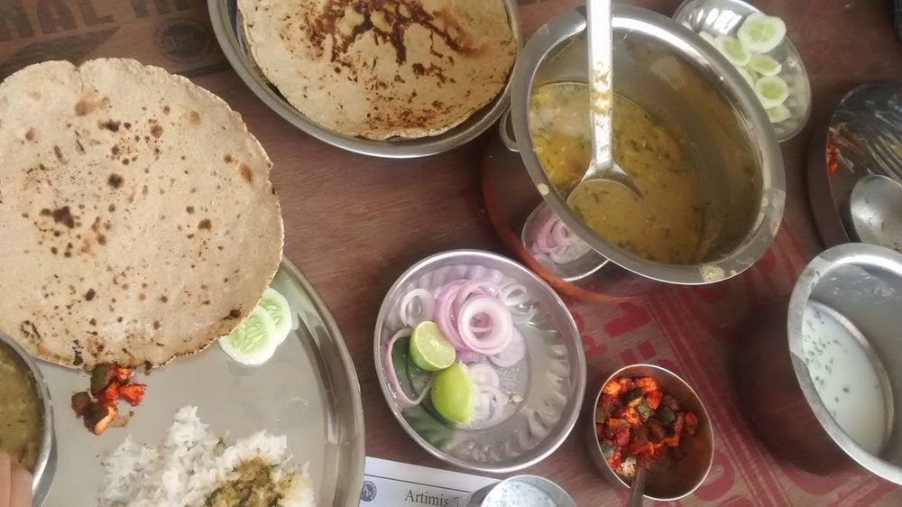

Contains: peanuts, mustard
Ingredients
Quantities for 4.
- 200g (1 cup) Toor Dal
- 2 tsp Garam Masalastand-in for goda masala; use goda masala if you can get it
- 1 tbsp thick pulp Tamarind
- 1.5 tbsp, grated Jaggery
- 3 tbsp, freshly grated Coconutoptional
- 2 tbsp Groundnut Oil
- 1 tsp Mustard Seeds
- 1/2 tsp Cumin Seeds
- 10 Curry Leaves
- 1/4 tsp Asafoetidause compounded-free hing to keep this gluten-free
- 1/2 tsp Turmeric
- 1 tsp Kashmiri Chilli
- 1/2 tsp Chilli Powderoptional
- 500ml Water
- 3 tbsp, chopped Coriander Leavesoptional
- to taste Salt
Cookware
pressure cooker, stovetop
Checked against the ingredient list for ten allergens: milk, egg, fish, crustaceans, tree nuts, peanuts, sesame, mustard, soy and gluten. Brands vary, so read the label on anything new to you.
Before you start
- Rinse and soak the dal 20 minutes so it cooks to a uniform mush.
- Soak the tamarind in 3 tbsp hot water for 15 minutes and squeeze out the pulp, or use a ready thick pulp.
- Amti wants a balance of sweet, sour and hot. Taste and adjust jaggery and tamarind at the end, not the beginning.
Method
- Pressure cook the soaked dal with the turmeric and 300ml water for 4 whistles until completely soft, then whisk it smooth.
- Heat the oil in a pan, pop the mustard seeds, then add the cumin, curry leaves and hing and let them sizzle 10 seconds.Wait for the mustard seeds to actually pop. Adding the rest too early gives you raw mustard in the finished dal.
- Add the kashmiri chilli and chilli powder and stir for 10 seconds off the heat so they bloom without burning.
- Pour in the whisked dal and the remaining 200ml water and bring to a simmer.
- Stir in the goda masala, tamarind pulp, jaggery and salt.
- Simmer uncovered 12 minutes, stirring now and then, until the amti darkens and thins slightly and a skin no longer forms on top.It should be pourable, not thick. Amti is drunk as much as eaten.
- Taste and adjust: more jaggery if it bites, more tamarind if it tastes flat.
- Finish with the grated coconut and coriander and serve with rice.
Storage
Keeps 3 days refrigerated and tastes better on day two. Reheat gently with a splash of water; do not boil hard or the coconut splits out.
Nutrition Good estimate
Medium protein: 12 g a serving, 15% of the calories
| Per serving218 g | Per 100 g | |
|---|---|---|
| Calories | 317 kcal | 146 kcal |
| Protein | 12.1 g | 6 g |
| Carbohydrate | 43.3 g | 20 g |
| of which sugars | 8.1 g | 4 g |
| Fibre | 10.1 g | 5 g |
| Fat | 11.9 g | 6 g |
| of which saturated | 4.7 g | 2 g |
| of which unsaturated | 6.4 g | 3 g |
Nearest database match used for asafoetida, curry leaves, garam masala, jaggery. Estimated from raw ingredients using USDA FoodData Central.
More like this: Vegan Indian recipes · Vegetarian Indian recipes · Gluten-free Indian recipes · Dairy-free Indian recipes · No onion no garlic recipes · Maharashtrian recipes
Times, yields, allergens and nutrition are guidance. Use your own judgement on doneness and on storing. More in About.